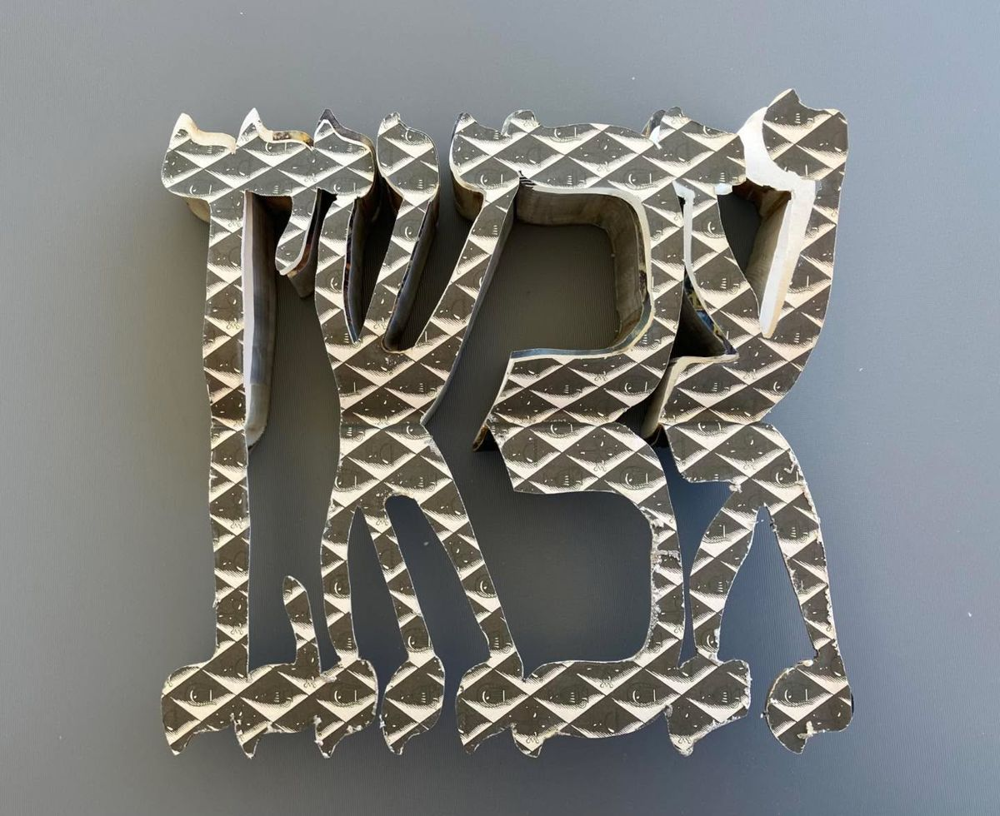
NowThe Hebrew word for now, cut so it reads from both sides.[year]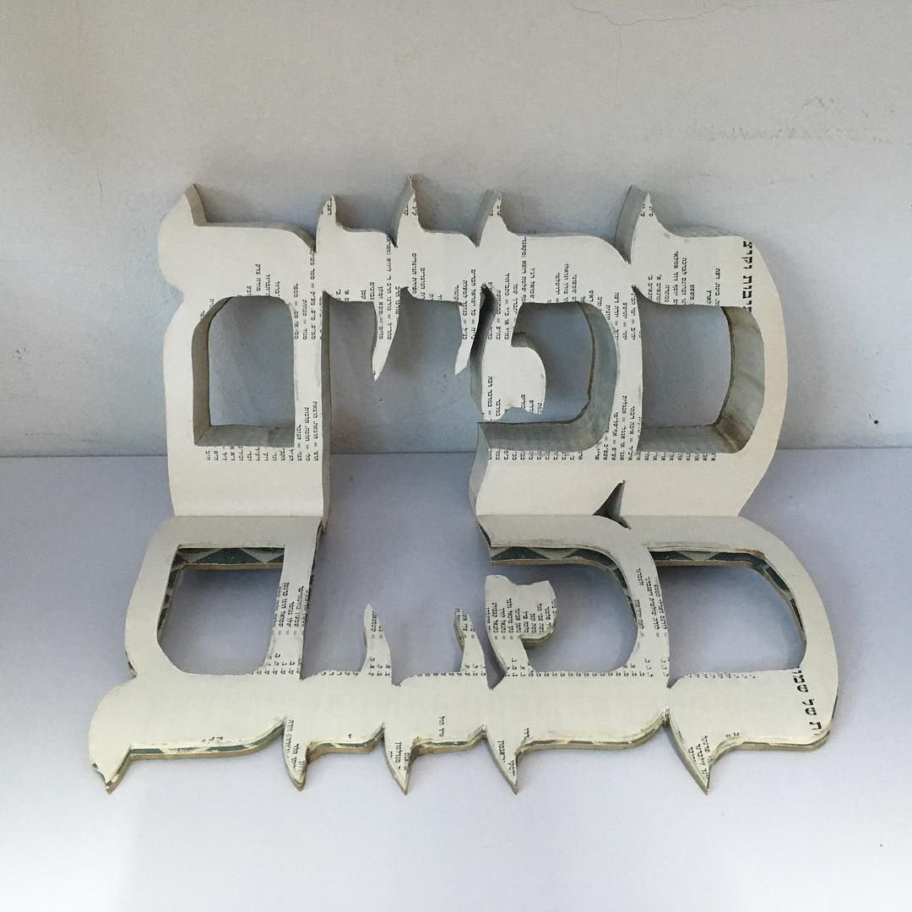
ApplauseHands raised, cut from the pages that told us whom to clap for.[year]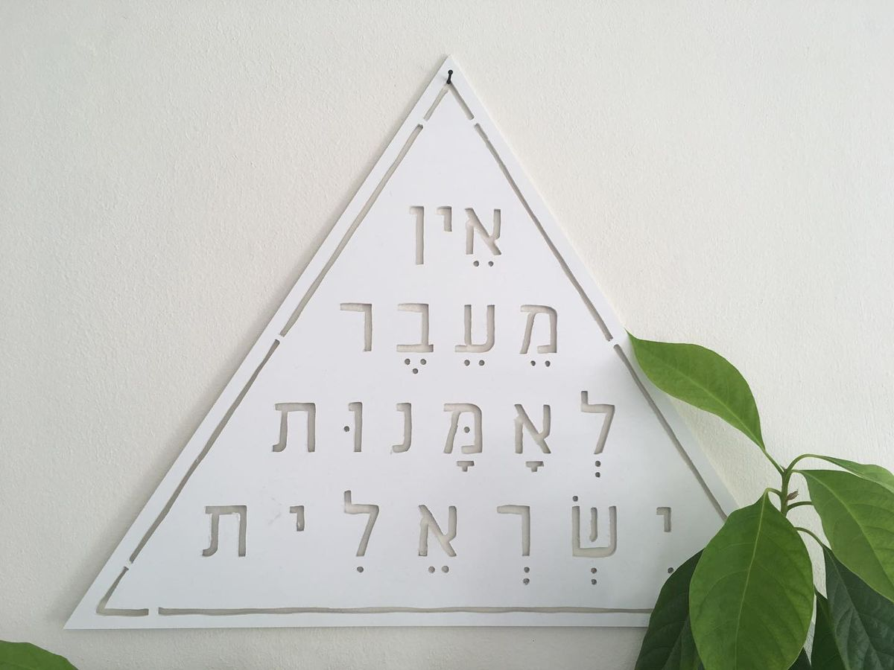
No BeyondAn entry with nowhere left to go.[year]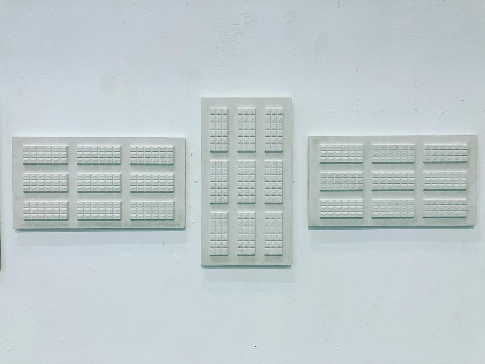
White CowA white cow, cut free of the page that described it.[year]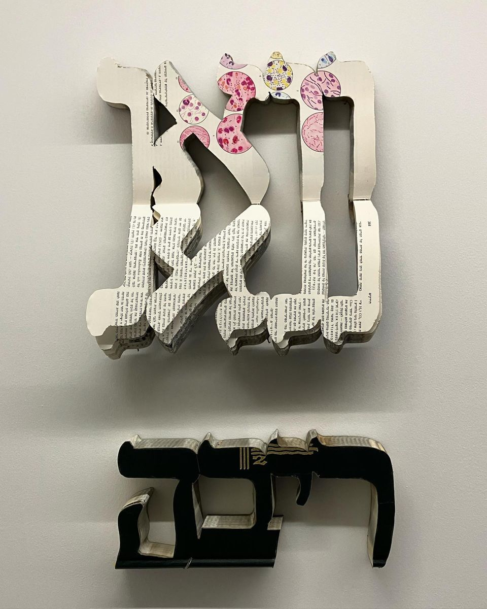
WowThree letters of surprise, lifted out of a thousand pages of facts.[year] Brainless ITwo heads, cut from the encyclopedia that was supposed to fill them.2008
Brainless ITwo heads, cut from the encyclopedia that was supposed to fill them.2008
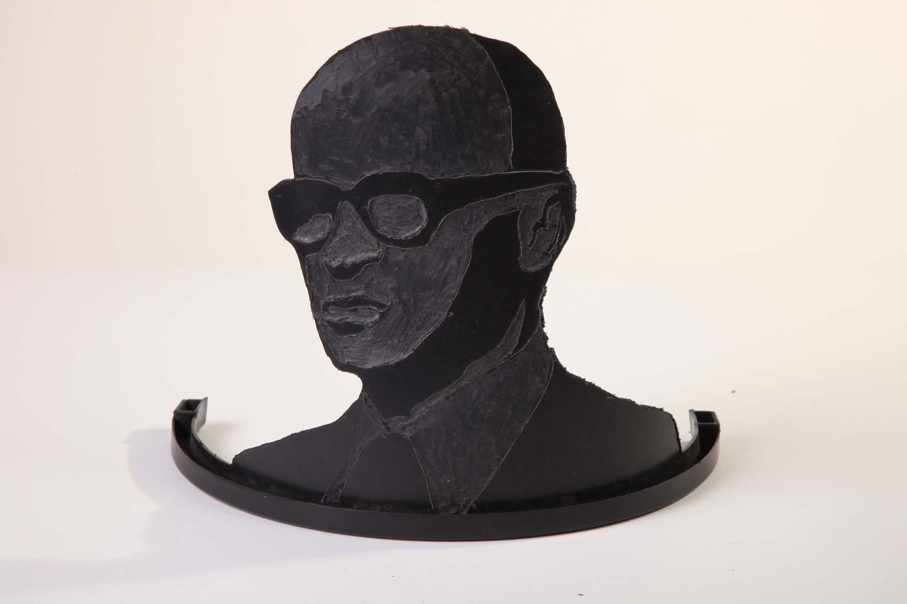
Nation's GreatestA nation’s greatest, carved back into the book that made them great.2010 Cartoon Encyclopedia IIA cartoon figure steps out of a very serious page.[year]
Cartoon Encyclopedia IIA cartoon figure steps out of a very serious page.[year]
 ShalekhetFallen leaves, one entry at a time.[year] · Sold
ShalekhetFallen leaves, one entry at a time.[year] · Sold
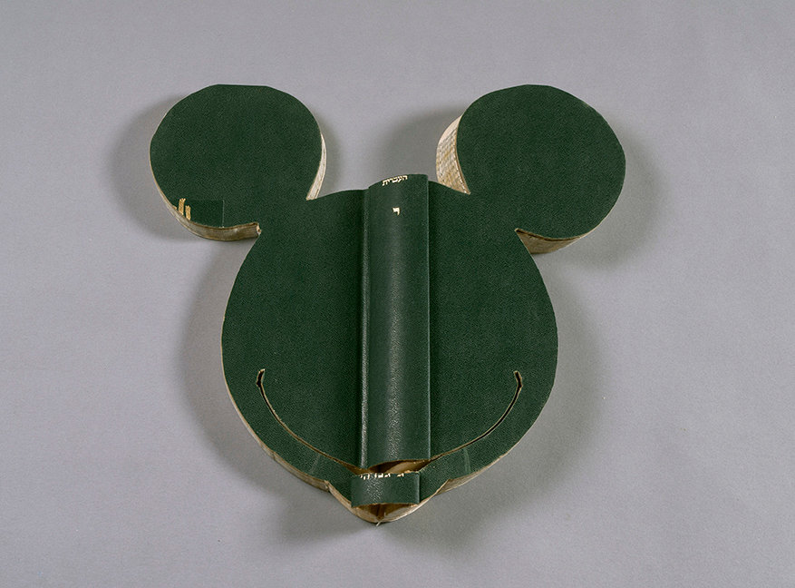
Cartoon Encyclopedia IA mouse from the cartoon page, cut loose from its caption.[year] Brainless — profilesThe same two heads, seen from the side.2008
Brainless — profilesThe same two heads, seen from the side.2008
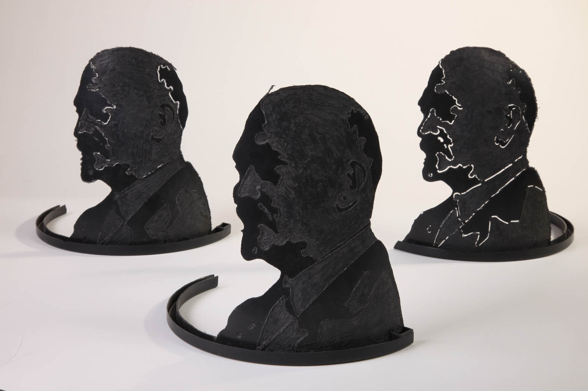
Nation's Greatest — threeThree leaders, one volume, no room for anyone else.2010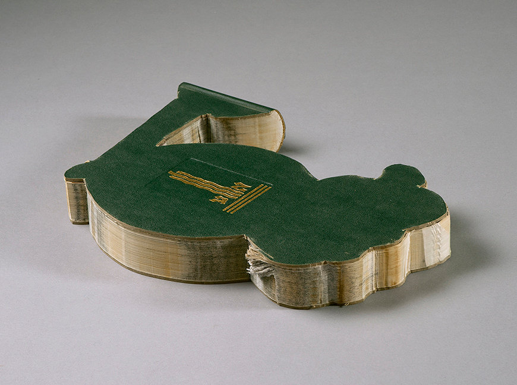
Cartoon Encyclopedia IIIThe cover keeps the face; the pages keep everything else.[year]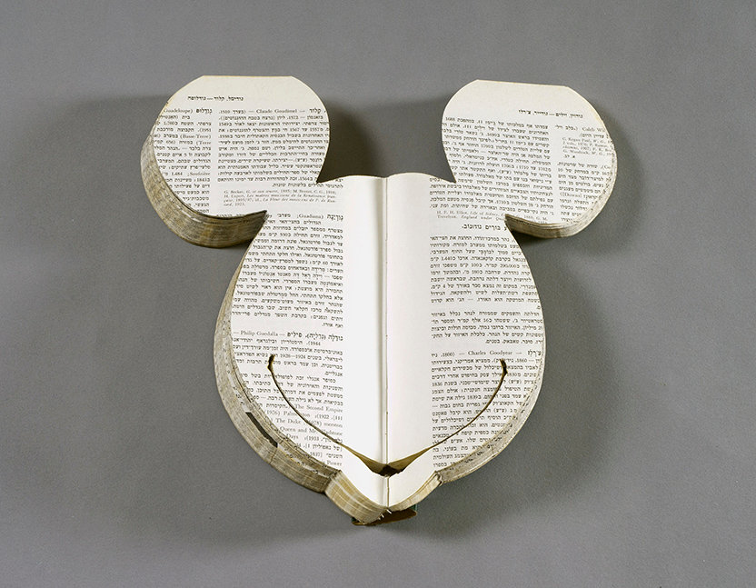
Cartoon Encyclopedia IVAn open volume, and a drawing climbing out of it.[year] Brainless IIThree-quarter view: the depth of a thousand cut pages.2008
Brainless IIThree-quarter view: the depth of a thousand cut pages.2008
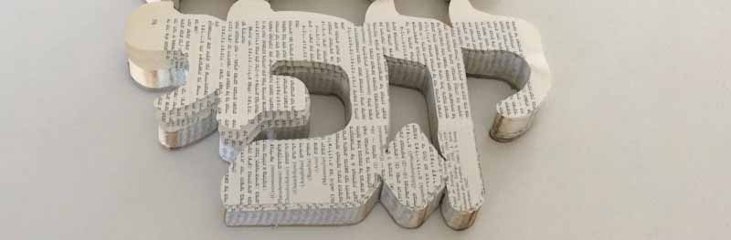
Y.F.The editor’s initials, cut from his own volume — read aloud, yofi: beauty.[year] Volume for ValueThe raw material: volumes given back by the people who grew up with them.[year]
Volume for ValueThe raw material: volumes given back by the people who grew up with them.[year]
 FragmentsWhat is left on the studio floor after a work is cut.[year]
Cartoon Encyclopedia VA standing figure, cut from an open volume.[year]
FragmentsWhat is left on the studio floor after a work is cut.[year]
Cartoon Encyclopedia VA standing figure, cut from an open volume.[year]